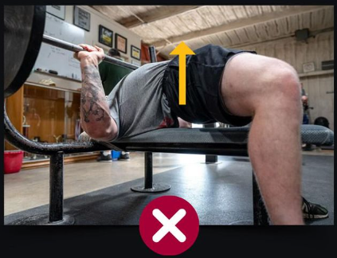
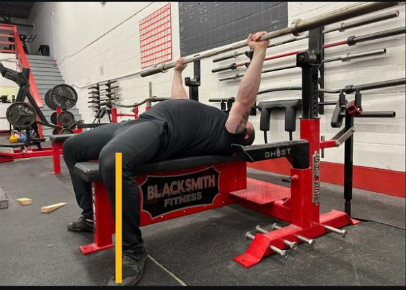

Muitas pessoas enfrentam dificuldades com o Leg Drive porque não entendem como gerar a força necessária ao utilizar essa técnica
O Leg Drive no supino envolve tensionar as pernas para empurrar as costas contra o banco, não para cima como em uma elevação pélvica.
Se você está lutando para manter o glúteo no banco durante o Leg Drive, pode ser que esteja comentendo esse erro. Para ajudar a entender melhor o Leg Drive, considero essas duas dicas valiosas
- Imagina que está tentando se empurrar para fora do banco.
- Pense que a força que seus pés fazem é como se estivesse usanod uma cadeira extensora
A posição dos pés também desempenha um papel importante e, geralmente, recomendo manter a sola do pé no chão, pois pode facilitar a execução da técnica.
Além disso, posicionar os pés na linha dos joelhos ou um pouco à frente pode ajudar a entender a diferença entre "mais extensora" e "menos elevação pélvica".
Existem dois tipos de Leg Drive:
- Leg Drive Estático:
Envolve manter a tensão nas pernas durante toda a repetição para manter o movimento mais estável e o arco mais sólido. Geralmente, realizando uma pausa mais suave no peito.
- Leg Drive Dinâmico:
É mais explosivo, quase que relaxando as pernas na fase excêntrica e uma utilização maior da tensão das pernas para gerar potência na fase concêntrica. Geralmente, afundando a barra no peito durante a pausa.
Ambas abordagens são válidas, e a escolhe entre elas depende muito da técnica individual do levantador.